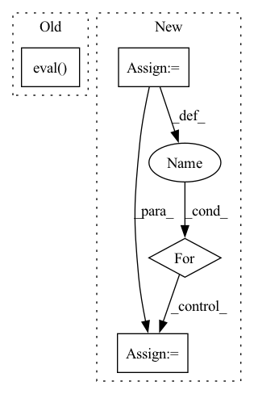

Pattern ID :4359
Before Change
self._epoch += 1
def val_epoch(self, *args, **kwargs):
self.model.eval()
self.before_val_epoch()
// do something
self.after_val_epoch()
After Change
def val_epoch(self):
collect_output = getattr(self.cur_stage, "collect_val_output", False)
self.epoch_output = [] if collect_output else None
self.data_loader = self.data_loaders["val"]
for step, data in enumerate(self.data_loader):
self._step = step
output = self._val_iter(data)
if collect_output:
self.epoch_output.append(output)
In pattern: SUPERPATTERN
Frequency: 3
Non-data size: 4
Instances Fragment ID: 16072612
Project Name: yeliudev/nncore
Commit Name: 68cf2bff96ad67b0dfb5f0ee69f31214853db798
Time: 2020-03-17
Author: goolhanrry@gmail.com
File Name: nncore/engine/engine.py
M Class Name: Engine
N Class Name: Engine
M Method Name: val_epoch(1)
N Method Name: val_epoch(1)
M Parent Class: object
N Parent Class: object
M File Name: nncore/engine/engine.py
N File Name: nncore/engine/engine.py
M Start Line: 81
M End Line: 85
N Start Line: 161
N End Line: 171
Before Change
// torch.random.manual_seed(123)
net = AutoregressiveModel.load_from_checkpoint(args.ckpt)
net.eval()
dataset_val = FSeriesIterableDataset(
num_terms=(3, 5),
num_samples=500,After Change
// torch.random.manual_seed(123)
net = AutoregressiveModel.load_from_checkpoint(args.ckpt)
preds = [
// (NStepPrediction(net), "n-step prediction"),
(NaiveGeneration(net), "naive n-step generation"),
]
dataset = FSeriesIterableDataset(
num_terms=(3, 5),
num_samples=500,
period_range=(10.0, 12.0),
bias_range=0,
coeff_range=(-1.0, 1.0),
phase_range=(-PI, PI),
smoothness=0.75,
)
fig = plt.figure(figsize=(8.0, 8.0))
grid = ImageGrid(
fig=fig,
rect=111,
nrows_ncols=(8, 8),
axes_pad=0.05,
share_all=True,
label_mode="1",
)
grid[0].get_yaxis().set_ticks([])
grid[0].get_xaxis().set_ticks([])
// horizon = net.forecast_steps
horizon = 128
see = 250 // net.receptive_field
for ax, s in zip(grid, dataset):
x, y, tx, ty = s["x"], s["y"], s["tx"], s["ty"]
// Assert no data leakage
// print(net(y[:201].unsqueeze(0).unsqueeze(0))[0, 0, 200])
// print(net(y.unsqueeze(0).unsqueeze(0))[0, 0, 200])
// see = np.random.randint(0, 300)
ax.plot(ty, y, c="k", linestyle="--", linewidth=0.5)
ax.plot(tx[:see], x[:see], c="k", linewidth=0.5)
for p, label in preds:
yhat = p.predict(x[:see], horizon)
ax.plot(tx[see : see + horizon], yhat, label=label)
ax.set_ylim(-2, 2)
handles, labels = ax.get_legend_handles_labels() Fragment ID: 16072632
Project Name: cheind/autoregressive
Commit Name: 320dbcc72842b652d319f9fcdec663d2073d285c
Time: 2021-10-18
Author: cheind@profactor.at
File Name: autoregressive/model.py
M Class Name: AnonimousClass
N Class Name: AnonimousClass
M Method Name: eval(1)
N Method Name: eval(1)
M Parent Class:
N Parent Class:
M File Name: autoregressive/model.py
N File Name: autoregressive/model.py
M Start Line: 147
M End Line: 203
N Start Line: 199
N End Line: 246
Before Change
logger.info("Templates are \n{}".format("\n".join(self.templates_text)))
def generate(self):
self.template_generate_model.eval()
with torch.no_grad():
self.get_templates()
self._show_template()
return self.templates_textAfter Change
template_text (:obj:`List[str]`): The generated template text
template_for_auto_t = LMBFFTemplateGenerationWrapper.from_config(config=self.config.template, tokenizer=self.tokenizer, verbalizer = self.verbalizer)
dataloader = PromptDataLoader(dataset, template_for_auto_t, self.tokenizer, self.tokenizer_wrapper, batch_size=len(dataset)) // register all data at once
for data in dataloader:
data = data.to(self.device)
self._register_buffer(data)
self.model.eval() Fragment ID: 16072619
Project Name: thunlp/openprompt
Commit Name: 071b9b92e6cefb3021b22e9813f175500260fda4
Time: 2021-11-08
Author: yl-chen17@mails.tsinghua.edu.cn
File Name: openprompt/prompts/prompt_generator.py
M Class Name: TemplateGenerator
N Class Name: TemplateGenerator
M Method Name: generate(2)
N Method Name: generate(1)
M Parent Class:
N Parent Class:
M File Name: openprompt/prompts/prompt_generator.py
N File Name: openprompt/prompts/prompt_generator.py
M Start Line: 167
M End Line: 168
N Start Line: 254
N End Line: 268